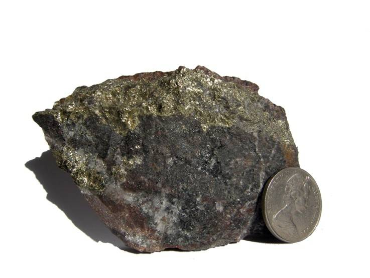
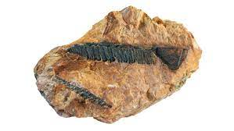

O urânio-235 (U235) não só é um dos isótopos naturais do urânio como é também o principal combustível utilizado em reatores nucleares para geração de energia. Este isótopo é também um dos materiais físseis usados em armas nucleares, devido à sua capacidade de sustentar uma reação em cadeia rápida.
O urânio-238 (U238) é o isótopo mais abundante do urânio natural e é usado principalmente como material fértil em reatores nucleares de água pesada e reatores de grafite, podendo até ser convertido em plutônio-239 (Pu239) em reatores nucleares e, portanto, também tem aplicações potenciais em armas nucleares.

O plutônio-239 (Pu239) é produzido artificialmente a partir do urânio-238 em reatores nucleares de água leve, sendo que é também usado como combustível em reatores nucleares e é um material físsil comumente empregado em armas nucleares, devido à sua alta fissilidade e facilidade de produção.
O plutônio-241 (Pu241) é um isótopo do plutônio produzido por caura de nêutrões em reatores nucleares de urânio. É também usado em pequenas quantidades em dispositivos nucleares como um isótopo de fissão secundária para aumentar a eficiência do processo de fissão.
Embora menos comum do que o urânio, o tório-232 (Th232) é um material fértil usado em reatores nucleares de tório para produção de energia, podendo ser convertido em urânio-233 (U233), um material físsil, através da caura de neutrões, este isótopo tem sido explorado como uma alternativa potencialmente mais segura e sustentável ao urânio em termos de não proliferação nuclear.
